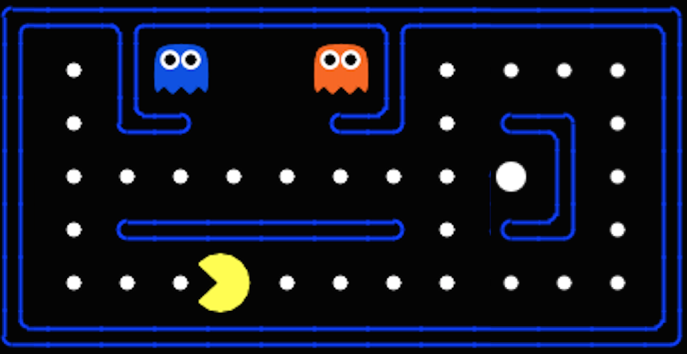

Fereshteh Sadeghi
Computer Science Ph.D , University of Washington
fsadeghi ~at~ cs.washington.edu
PhD Thesis  / Google Scholar
/ Google Scholar 
My research is focused on developing learning algorithms that combine perception and control for learning robot skills. I am interested in how learning can be used to enable machines acquire behavioral skills that can generalize to unstructured real world settings. During my PhD, I have developed techniques for learning highly generalizable vision-based robot controllers in simulation for efficient transfer and adaptability to the real world.
News!
 ~ Aug. 2019 ~ Excited to release MuSHR! Also featured in GeekWire and WIRED!
~ Aug. 2019 ~ Excited to release MuSHR! Also featured in GeekWire and WIRED!
 ~ May. 2019 ~ DIViS: Domain Invariant Visual Servoing for Collision-Free Goal Reaching is accepted in RSS 2019 conference!
~ May. 2019 ~ DIViS: Domain Invariant Visual Servoing for Collision-Free Goal Reaching is accepted in RSS 2019 conference!
 ~ Feb. 2019 ~ Successfully defended my PhD thesis: "Domain Invariant and Semantic Aware Visual Servoing" and am officially a Doctor in CS !
~ Feb. 2019 ~ Successfully defended my PhD thesis: "Domain Invariant and Semantic Aware Visual Servoing" and am officially a Doctor in CS !
 ~ Feb. 2019 ~ New arXiv preprint DIViS: Domain Invariant Visual Servoing for Collision-Free Goal Reaching posted!
~ Feb. 2019 ~ New arXiv preprint DIViS: Domain Invariant Visual Servoing for Collision-Free Goal Reaching posted!
 ~ Oct. 2018 ~ I will be giving an invited talk at the RI VASC Seminar.
~ Oct. 2018 ~ I will be giving an invited talk at the RI VASC Seminar.
 ~ Jun. 2018 ~ I wrote a GoogleAI blog post : Teaching Uncalibrated Robots to Visually Self-Adapt.
~ Jun. 2018 ~ I wrote a GoogleAI blog post : Teaching Uncalibrated Robots to Visually Self-Adapt.
 ~ Jun. 2018 ~ I am co-organizing the 4th Women in Robotics Workshop at Robotics: Science and Systems Conference(R:SS).
~ Jun. 2018 ~ I am co-organizing the 4th Women in Robotics Workshop at Robotics: Science and Systems Conference(R:SS).
 ~ Feb. 2018 ~ Sim2Real View Invariant Visual Servoing accepted to CVPR2018.
~ Feb. 2018 ~ Sim2Real View Invariant Visual Servoing accepted to CVPR2018.
 ~ Dec. 2017 ~ Sim2Real View Invariant Visual Servoing posted on arxiv . See the video here .
~ Dec. 2017 ~ Sim2Real View Invariant Visual Servoing posted on arxiv . See the video here .
 ~ Sept. 2017 ~ At IROS 2017, I will be giving an invited talk in the workshop on Vision-based Agile Autonomous Navigation of UAVs .
~ Sept. 2017 ~ At IROS 2017, I will be giving an invited talk in the workshop on Vision-based Agile Autonomous Navigation of UAVs .
 ~ June. 2017 ~ I am spending time at Google Brain Robotics for internship
~ June. 2017 ~ I am spending time at Google Brain Robotics for internship
 ~ May. 2017 ~ Won the NVIDIA Graduate Fellowship 2017- 2018 award!
~ May. 2017 ~ Won the NVIDIA Graduate Fellowship 2017- 2018 award!
 ~ April. 2017 ~ Our CAD2RL paper got accepted in Robotics: Science and Systems Conference(R:SS) !! Check the video here.
~ April. 2017 ~ Our CAD2RL paper got accepted in Robotics: Science and Systems Conference(R:SS) !! Check the video here.
~ Nov. 2016 ~ New preprint on deep reinforcement learning and deep robotic learning posted! Check the video here.
~ Nov. 2016 ~ At NIPS'16, I will be giving a contributed talk in the DLAI workshop
~ Oct. 2016 ~ I will be serving as a program committee member in CVPR'17.
~ Jun. 2016 ~ Spending my summer as a research intern at Magic Leap ! It feels magical to be a leaper :) 
~ Apr. 2016 ~ I am guest lecturer at ML course (CSEP546) for Spring'16 quarter.
~ Feb. 2016 ~ I will be serving as a program committee member in ECCV'16.
~ Feb. 2016 ~ I am guest lecturer at AI course (CSEP573) for Winter'16 quarter.
~ Nov. 2015 ~ I will be serving as a program committee member in CVPR'16.
~ Oct. 2015 ~ I am guest lecturer at AI course (CSE473) for Fall'15 quarter.
~ Sep. 2015 ~ I am organizing Vision Seminar (CSE 590v) for the Fall'15 quarter.
~ Sep. 2015 ~ Our Visual analogy paper got accepted in NIPS'15.
~ Sep. 2015 ~ Our Visual entailment paper got accepted as oral in ICCV'15.
~ Mar. 2015 ~ VisKE got accepted in CVPR'15.
~ Jan. 2015 ~ My album creation paper is featured in EurekAlert.
~ Dec. 2014 ~ I will organize the GRAIL seminar (cse 591) for the Spring'15 quarter.
~ Nov. 2014 ~ I will be serving as a program committee member in CVPR'15.
Talks!
~ June. 2019 ~ Robotics: Science and Systems Conference 2019
~ June. 2019 ~ Workshop on Closing the Reality Gap in Sim2real at RSS
~ October. 2018 ~ RI VASC Seminar
~ April. 2018 ~ BAIR Seminar, See the video here
~ March. 2018 ~ GPU Technology Conference 2018
~ July. 2017 ~ Robotics: Science and Systems Conference 2017
~ May. 2017 ~ GPU Technology Conference 2017, See the video here
~ May. 2017 ~ Symposium on Robot Learning 2017
~ April. 2017 ~ BAIR Seminar
~ Dec. 2016 ~ Deep Learning for Action and Interaction, NIPS 2016, Talk video here
Videos!
PhD Thesis
Domain Invariant and Semantic Aware Visual Servoing
Fereshteh Sadeghi
Ph.D. thesis, University of Washington, 2019
Preprints

MuSHR: A Low-Cost, Open-Source Robotic Racecar for Education and Research
MuSHR is a low-cost, open-source robotic racecar platform for education and research. MuSHR aspires to contribute towards democratizing the field of robotics as a low-cost platform that can be built and deployed by following detailed, open documentation and do-it-yourself tutorials.
S. Srinivasa, P. Lancaster, J. Michalove, M. Schmittle, C. Summers, M. Rockett, J. R. Smith, S. Choudhury, C. Mavrogiannis, Fereshteh Sadeghi
arXiv preprint arXiv:1908.08031 (2019)
Publications
Here is the list of my most recent publications. For the complete list of my publications please visit my Google Scholar page and DBLP.

DIViS: Domain Invariant Visual Servoing for Collision-Free Goal Reaching
In this paper, we investigate how to minimize human effort and intervention to teach robots perform real world tasks that incorporate semantics and we propose DIViS, a Domain Invariant policy learning approach for collision free Visual Servoing. While DIViS does not use any real robot data at the training time it is capable of servoing real mobile robots to semantic object categories in many diverse and unstructured real-world environments.
Fereshteh Sadeghi
RSS (Robotics: Science and System) 2019

Sim2Real View Invariant Visual Servoing by Recurrent Control
In this paper, we study how viewpoint-independent visual servoing skills can be learned automatically in a robotic manipulation scenario. To this end, we train a deep, recurrent controller that can automatically determine which actions move the end-point of a robotic arm to a desired object. We show how we can learn this recurrent controller using simulated data, and then describe how the resulting model can be transferred to a real-world Kuka IIWA robotic arm.
Fereshteh Sadeghi , Alexander Toshev, Eric Jang, Sergey Levine
CVPR 2018

CAD2RL : Real Single-Image Flight without a Single Real Image
We propose CAD2RL, a flight controller for Collision Avoidance via Deep Reinforcement Learning that can be used to perform collision-free flight in the real world although it is trained entirely in a 3D CAD model simulator. Our method uses only single RGB images from a monocular camera mounted on the robot as the input and is specialized for indoor hallway following and obstacle avoidance.
Fereshteh Sadeghi and Sergey Levine
RSS (Robotics: Science and System) 2017

VISALOGY: Answering Visual Analogy Questions
In this paper, we study the problem of answering visual analogy questions. These questions take the form of image A is to image B as image C is to what. Answering these questions entails discovering the mapping from image A to image B and then extending the mapping to image C and searching for the image D such that the relation from A to B holds for C to D. We pose this problem as learning an embedding that encourages pairs of analogous images with similar transformations to be close together using convolutional neural networks with a quadruple Siamese architecture.
Fereshteh Sadeghi , C. Lawrence Zitnick, Ali Farhadi
NIPS 2015

Segment-Phrase Table for Semantic Segmentation, Visual Entailment and Paraphrasing
We introduce Segment-Phrase Table (SPT), a large collection of bijective associations between textual phrases and their corresponding segmentations. We show that fine-grained textual labels facilitate contextual reasoning that helps in satisfying semantic constraints across image segments. This feature enables us to achieve state-of-the-art segmentation results on benchmark datasets. We also show that the association of high-quality segmentations to textual phrases aids in richer semantic understanding and reasoning of these textual phrases which motivates the problem of visual entailment and visual paraphrasing.
Hamid Izadinia, Fereshteh Sadeghi , Santosh K. Divvala, Yejin Choi, Ali Farhadi
ICCV 2015 (Oral)

VisKE: Visual Knowledge Extraction and Question Answering by Visual Verification of Relation Phrases
In this work, we introduce the problem of visual verification of relation phrases and developed a Visual Knowledge Extraction system called VisKE. Given a verb-based relation phrase between common nouns, our approach assess its validity by jointly analyzing over text and images and reasoning about the spatial consistency of the relative configurations of the entities and the relation involved. Our approach involves no explicit human supervision thereby enabling large-scale analysis. Using our approach, we have already verified over 12000 relation phrases. Our approach has been used to not only enrich existing textual knowledge bases by improving their recall, but also augment open domain question-answer reasoning.
Fereshteh Sadeghi , Santosh K. Divvala, Ali Farhadi
CVPR 2015

Incorporating Scene Context and Object Layout into Appearance Modeling
In this paper, we propose a method to learn scene structures that can encode three main interlacing components of a scene: the scene category, the context-specific appearance of objects, and their layout. Our experimental evaluations show that our learned scene structures outperform state-of-the-art method of Deformable Part Models in detecting objects in a scene. Our scene structure provides a level of scene understanding that is amenable to deep visual inferences. The scene struc- tures can also generate features that can later be used for scene categorization. Using these features, we also show promising results on scene categorization.
Hamid Izadinia* , Fereshteh Sadeghi* , Ali Farhadi
CVPR 2014

Learning to Select and Order Vacation Photographs
we propose the problem of automatic photo album creation from an unordered image collection. To help solve this problem, we collect a new benchmark dataset based on Flicker images. We analyze the problem and provide experimental evidence, through user studies, that both selection and ordering of photos within an album is important for human observers. To capture and learn rules of album composition, we propose a discriminative structured model capable of encoding simple prefer ences for contextual layout of the scene and ordering between photos. The parameters of the model are learned using a structured SVM framework.
Fereshteh Sadeghi , J. Rafael Tena, Ali Farhadi, Leonid Sigal
WACV 2015

Decoding the Text Encoding
Despite the attractiveness and simplicity of producing word clouds, they do not provide a thorough visualization for the distribution of the underlying data. Our proposed method is able to decode an input word cloud visualization and provides the raw data in the form of a list of (word, value) pairs. To the best of our knowledge our work is the first attempt to extract raw data from word cloud visualization. The results of our experiments show that our algorithm is able to extract the words and their weights effectively with considrerable low error rate.
Fereshteh Sadeghi ,Hamid Izadinia
arXiv:1412.6079, 2014

Latent pyramidal regions for recognizing scenes
In this paper we proposed a simple but efficient image representation for solving the scene classification problem. Our new representation combines the benefits of spatial pyramid representation using nonlinear feature coding and latent Support Vector Machine (LSVM) to train a set of Latent Pyramidal Regions (LPR). Each of our LPRs captures a discriminative characteristic of the scenes and is trained by searching over all possible sub-windows of the images in a latent SVM training procedure. The final response of the LPRs form a single feature vector which we call the LPR representation and can be used for the classification task.
Fereshteh Sadeghi , Marshall Tappen
ECCV 2012

Probabilistic Label Trees for Efficient Large Scale Image Classification
Large-scale recognition problems with thousands of classes pose a particular challenge because applying the classifier requires more computation as the number of classes grows. The label tree model integrates classification with the traversal of the tree so that complexity grows logarithmically. We show how the parameters of the label tree can be found using maximum likelihood estimation. This new probabilistic learning technique produces a label tree with significantly improved recognition accuracy.
Baoyuan Liu, Fereshteh Sadeghi , Marshall Tappen, Ohad Shamir, Ce Liu
CVPR 2013
Teaching (GTA)

Artificial Intelligence
Search, Expectimax, CSP, MDP, Reinforcement Learning, Q-Learning, Uncertainty, Hidden Markov Models (HMMs), Baysian Networks (BNs), Naive Bayes, Perceptron, and fun PacMan game.